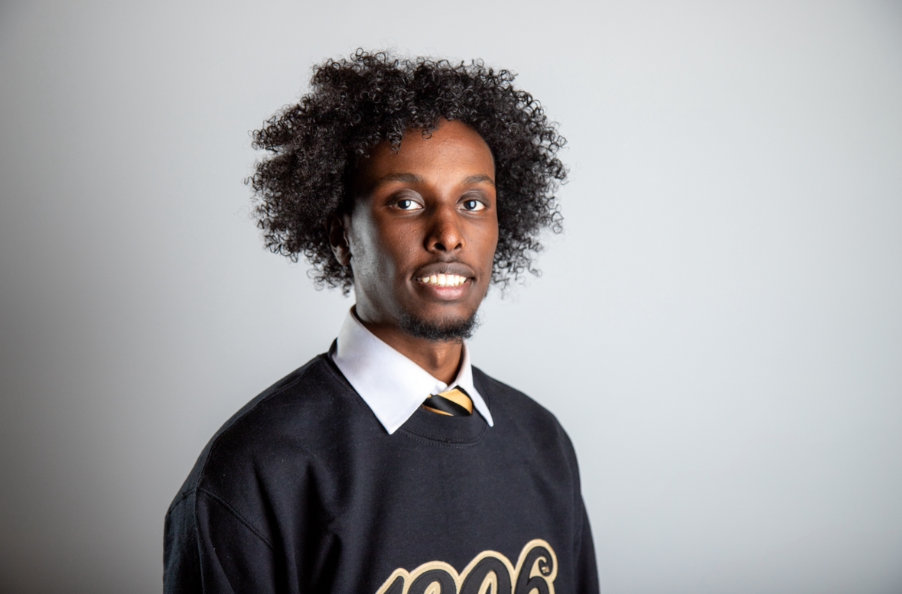
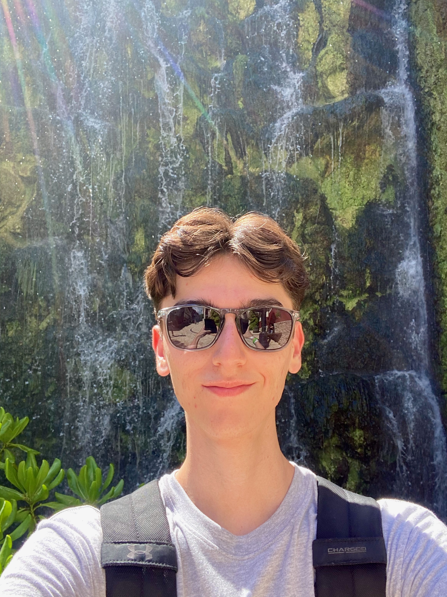

Zuheb
I am a tech enthusiast exploring the intersection of technology, bias, and power. Through this project, I examined intersectionality, recognizing how race, gender, and class shape experiences. Taking the Harvard Implicit Bias Test (IAT) revealed how unconscious biases influence decisions in hiring, education, and law enforcement. Analyzing Robin DiAngelo's view on systemic racism and Ben Shapiro's critique of intersectionality deepened my understanding of bias in society. This project reinforced that technology is not neutral systems reflect creators’ biases. As a future technologist, I aim to develop ethical, inclusive solutions that challenge bias and promote fairness in digital spaces.
Ulises
Hello, my name is Ulises. I am a senior studying Information Science with a certificate in Computer Science. In my spare time, I enjoy reading, learning new coding skills, gaming, and investing. Some of my other interest include politics and philosophy. I hope to be able to work in tech one day as a Software Engineer or Data Scientist.